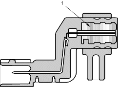
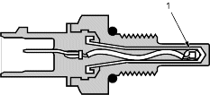
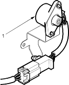

PGM-FI System
The Programmed Fuel Injection (PGM-FI) system is a sequential multiport fuel injection system.
Air Conditioning (A/C) Compressor Clutch Relay
When the ECM/PCM receives a demand for cooling from the A/C system, it delays the compressor from being energised, and enriches the mixture to assure smooth transition to the A/C mode.
Alternator Control
The alternator signals the Engine Control Module (ECM)/Powertrain Control Module (PCM) during charging.
Barometric Pressure (BARO) Sensor
The BARO sensor is inside the ECM/PCM. It converts atmospheric pressure into a voltage signal that modifies the basic duration of the fuel injection discharge.
Crankshaft Position (CKP) Sensor
The CKP sensor detects engine speed and determines ignition timing and timing for fuel injection of each cylinder.

- MAGNET
Engine Coolant Temperature (ECT) Sensor
The ECT sensor is a temperature dependent resistor (thermistor). The resistor of the thermistor decreases as the engine coolant temperature increases.

- THERMISTOR
Idle Mixture Adjuster (IMA) (without TWC model)
The idle mixture adjuster (IMA) is selected resistance device used to control idle mixture.

- IMA
Ignition Timing Control
The ECM/PCM contains the memory for basic ignition timing at various engine speeds and manifold absolute pressure. It also adjusts the timing according to engine coolant temperature.
Injector Timing and Duration
The ECM/PCM contains the memory for basic discharge duration at various engine speeds and manifold pressures. The basic discharge duration, after being read out from the memory, is further modified by signals sent from various sensors to obtain the final discharge duration.
By monitoring long term fuel trim, the ECM/PCM detects long term malfunctions in the fuel system, and will set a Diagnostic Trouble Code (DTC).